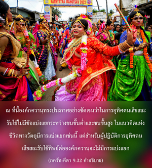

และ ศูทฺร (ผู้ใช้แรงงาน) สามารถบรรลุถึงจุดมุ่งหมายสูงสุดได้")
 และ ศูทฺร (ผู้ใช้แรงงาน) สามารถบรรลุถึงจุดมุ่งหมายสูงสุดได้")
โอ้ โอรสพระนาง ปฺฤถา พวกที่มาพึ่งข้า ถึงแม้ว่าเกิดมาต่ำ เช่น สตรี ไวศฺย (พ่อค้า) และ ศูทฺร (ผู้ใช้แรงงาน) สามารถบรรลุถึงจุดมุ่งหมายสูงสุดได้

ณ ที่นี้องค์ภควานฺทรงประกาศอย่างชัดเจนว่า ในการอุทิศตนเสียสละรับใช้ไม่มีข้อแบ่งแยกระหว่างชนชั้นต่ำ และชนชั้นสูง ในแนวคิดแห่งชีวิตทางวัตถุมีการแบ่งแยกเช่นนี้ แต่สำหรับผู้ปฏิบัติการอุทิศตนเสียสละรับใช้ทิพย์ต่อองค์ภควานฺจะไม่มีการแบ่งแยก ทุกคนมีสิทธิ์ที่จะไปถึงจุดมุ่งหมายสูงสุดได้ ใน ศฺรีมทฺ-ภาควตมฺ (2.4.18) กล่าวไว้ว่า แม้พวกที่ต่ำสุดเรียกว่า จณฺฑาล (คนกินสุนัข) สามารถที่จะทำให้บริสุทธิ์ขึ้นมาได้ด้วยการมาคบหาสมาคมกับสาวกผู้บริสุทธิ์ ฉะนั้น การอุทิศตนเสียสละรับใช้ และการนำทางของสาวกผู้บริสุทธิ์มีพลังอำนาจมากจนไม่มีการเลือกปฏิบัติ ระหว่างชนชั้นที่ต่ำกว่า และชนชั้นที่สูงกว่า ทุกๆ คนสามารถนำไปปฏิบัติได้ คนที่เรียบง่ายที่สุดมาพึ่งสาวกผู้บริสุทธิ์สามารถทำให้บริสุทธิ์ขึ้นได้ จากการนำทางที่ถูกต้องตามระดับต่างๆของธรรมชาติวัตถุ มนุษย์แบ่งอยู่ในระดับแห่งความดี (พฺราหฺมณ) ระดับแห่งตัณหา (กฺษตฺริยหรือผู้บริหาร) ระดับผสมกันระหว่างตัณหา และอวิชชา (ไวศฺย หรือพ่อค้า) และระดับแห่งอวิชชา (ศูทฺร หรือผู้ใช้แรงงาน) พวกที่ต่ำไปกว่านี้เรียกว่า จณฺฑาล ที่เกิดในครอบครัวบาป โดยทั่วไปการคบหาสมาคมกับผู้ที่เกิดในครอบครัวบาปชนชั้นสูงรับไม่ได้ แต่วิธีแห่งการอุทิศตนเสียสละรับใช้มีพลังอำนาจมาก สาวกผู้บริสุทธิ์ขององค์ภควานฺสามารถทำให้คนในชั้นต่ำทั้งหมดบรรลุถึงความสมบูรณ์สูงสุดแห่งชีวิต จะเป็นเช่นนี้ได้เมื่อเราพึ่งองค์กฺฤษฺณเท่านั้น ดังที่ได้แสดงไว้ ณ ที่นี้ด้วยคำว่า วฺยปาศฺริตฺย เราต้องมาพึ่งองค์กฺฤษฺณโดยสมบูรณ์แล้วจะกลายมาเป็นผู้ที่ยิ่งใหญ่กว่า ชฺญานี และ โยคีผู้ยิ่งใหญ่